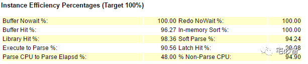
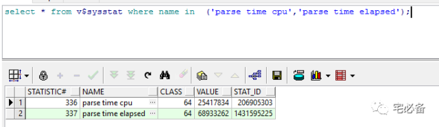

Parse CPU to Parse Elapsd %
原创 2017-06-13 Oracle 宅必备
从这期开始讲解awr报告的部分，上期说的是awr整体的部分，今天开始对里面的细节说起
这期针对Instance Efficiency Percentages 部分做说明

理论上说上述比例应接近100%
Parse CPU to Parse Elapsd %
该指标指的是解析过程中CPU时间占的比重
由于解析需要CPU进行操作，如在解析过程中有什么东西阻止进程访问CPU，则会导致该比例过小
如该比例为100%说明解析过程中没有等待
上图中比例为48%，我们可以假设一个解析耗时2.08(1/0.48)秒，但其实CPU用在解析上只有1秒，这就造成了CPU资源的浪费
如何计算
该指标的计算公式为:
(parse time cpu/parse time elapsed)*100
数值可从v$sysstat视图获取，注意该参数是累积的，计算时需时时间段的差值

如何处理
如此指标过低说明可能为shared pool 存在冲突，可能为shared pool过小或未使用绑定变量所致